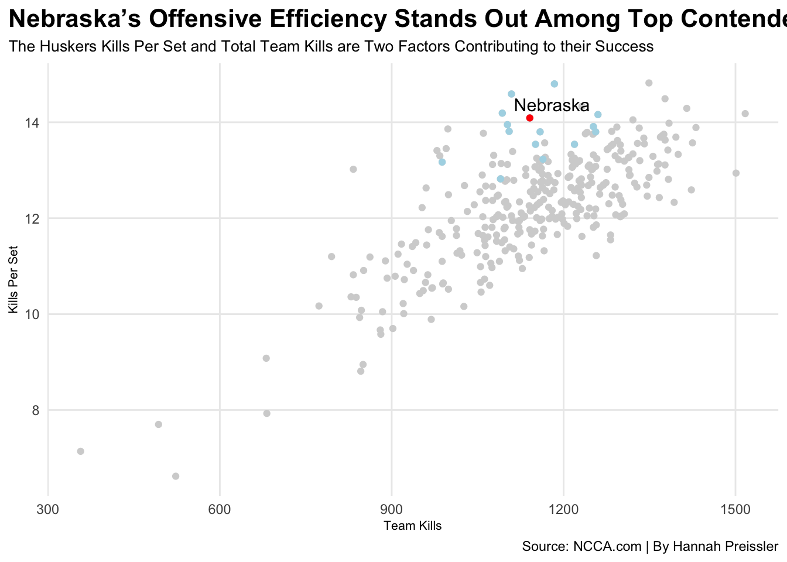

Code
library(tidyverse)── Attaching core tidyverse packages ──────────────────────── tidyverse 2.0.0 ──
✔ dplyr 1.1.2 ✔ readr 2.1.4
✔ forcats 1.0.0 ✔ stringr 1.5.0
✔ ggplot2 3.4.3 ✔ tibble 3.2.1
✔ lubridate 1.9.2 ✔ tidyr 1.3.0
✔ purrr 1.0.2
── Conflicts ────────────────────────────────────────── tidyverse_conflicts() ──
✖ dplyr::filter() masks stats::filter()
✖ dplyr::lag() masks stats::lag()
ℹ Use the conflicted package (<http://conflicted.r-lib.org/>) to force all conflicts to become errorsCode
library(ggrepel)
library(ggalt)Registered S3 methods overwritten by 'ggalt':
method from
grid.draw.absoluteGrob ggplot2
grobHeight.absoluteGrob ggplot2
grobWidth.absoluteGrob ggplot2
grobX.absoluteGrob ggplot2
grobY.absoluteGrob ggplot2Code
top25 <- c("Nebraska", "Wisconsin", "Louisville", "Texas", "Stanford", "Pittsburgh", "Oregon", "Arkansas", "Washington St.", "Georgia Tech", "Tennessee", "BYU", "Kentucky", "Kansas", "Arizona St.", "Creighton", "Purdue", "Dayton", "Penn St.", "Baylor", "Florida", "Houston", "Western Ky.", "Auburn", "Southern California")
hittingpct <- read_csv("newhitting.csv") |>
mutate(Team = gsub("(FL)", "FL", Team, fixed=TRUE)) |>
mutate(Team = gsub("(NY)", "NY", Team, fixed=TRUE)) |>
mutate(Team = gsub("(PA)", "PA", Team, fixed=TRUE)) |>
mutate(Team = gsub("(OH)", "OH", Team, fixed=TRUE)) |>
separate(Team, into=c("Team", "Conference"), sep="\\(") |>
mutate(Conference=gsub(")", "", Conference)) |>
mutate(Team = str_trim(Team))Rows: 332 Columns: 8
── Column specification ────────────────────────────────────────────────────────
Delimiter: ","
chr (2): Team, W-L
dbl (4): Rank, S, Errors, Pct.
num (2): Kills, Total Attacks
ℹ Use `spec()` to retrieve the full column specification for this data.
ℹ Specify the column types or set `show_col_types = FALSE` to quiet this message.Warning: Expected 2 pieces. Additional pieces discarded in 2 rows [25, 159].Code
killsperset <- read_csv("newkills.csv") |>
mutate(Team = gsub("(FL)", "FL", Team, fixed=TRUE)) |>
mutate(Team = gsub("(NY)", "NY", Team, fixed=TRUE)) |>
mutate(Team = gsub("(PA)", "PA", Team, fixed=TRUE)) |>
mutate(Team = gsub("(OH)", "OH", Team, fixed=TRUE)) |>
separate(Team, into=c("Team", "Conference"), sep="\\(") |>
mutate(Conference=gsub(")", "", Conference)) |>
mutate(Team = str_trim(Team))Rows: 332 Columns: 6
── Column specification ────────────────────────────────────────────────────────
Delimiter: ","
chr (2): Team, W-L
dbl (3): Rank, S, Per Set
num (1): Kills
ℹ Use `spec()` to retrieve the full column specification for this data.
ℹ Specify the column types or set `show_col_types = FALSE` to quiet this message.Warning: Expected 2 pieces. Additional pieces discarded in 2 rows [80, 174].Code
opphitting <- read_csv("opphit.csv") |>
mutate(Team = gsub("(FL)", "FL", Team, fixed=TRUE)) |>
mutate(Team = gsub("(NY)", "NY", Team, fixed=TRUE)) |>
mutate(Team = gsub("(PA)", "PA", Team, fixed=TRUE)) |>
mutate(Team = gsub("(OH)", "OH", Team, fixed=TRUE)) |>
separate(Team, into=c("Team", "Conference"), sep="\\(") |>
mutate(Conference=gsub(")", "", Conference)) |>
mutate(Team = str_trim(Team))Rows: 332 Columns: 7
── Column specification ────────────────────────────────────────────────────────
Delimiter: ","
chr (1): Team
dbl (4): Rank, S, Opp Errors, Opp Pct
num (2): Opp Kills, Opp Attacks
ℹ Use `spec()` to retrieve the full column specification for this data.
ℹ Specify the column types or set `show_col_types = FALSE` to quiet this message.Warning: Expected 2 pieces. Additional pieces discarded in 2 rows [25, 156].Code
blocks <- read_csv("blocksperset.csv") |>
mutate(Team = gsub("(FL)", "FL", Team, fixed=TRUE)) |>
mutate(Team = gsub("(NY)", "NY", Team, fixed=TRUE)) |>
mutate(Team = gsub("(PA)", "PA", Team, fixed=TRUE)) |>
mutate(Team = gsub("(OH)", "OH", Team, fixed=TRUE)) |>
separate(Team, into=c("Team", "Conference"), sep="\\(") |>
mutate(Conference=gsub(")", "", Conference)) |>
mutate(Team = str_trim(Team))Rows: 332 Columns: 7
── Column specification ────────────────────────────────────────────────────────
Delimiter: ","
chr (2): Team, W-L
dbl (5): Rank, S, Block Solos, Block Assists, Per Set
ℹ Use `spec()` to retrieve the full column specification for this data.
ℹ Specify the column types or set `show_col_types = FALSE` to quiet this message.Warning: Expected 2 pieces. Additional pieces discarded in 2 rows [7, 20].Code
digs <- read_csv("digs.csv") |>
mutate(Team = gsub("(FL)", "FL", Team, fixed=TRUE)) |>
mutate(Team = gsub("(NY)", "NY", Team, fixed=TRUE)) |>
mutate(Team = gsub("(PA)", "PA", Team, fixed=TRUE)) |>
mutate(Team = gsub("(OH)", "OH", Team, fixed=TRUE)) |>
separate(Team, into=c("Team", "Conference"), sep="\\(") |>
mutate(Conference=gsub(")", "", Conference)) |>
mutate(Team = str_trim(Team))Rows: 332 Columns: 6
── Column specification ────────────────────────────────────────────────────────
Delimiter: ","
chr (2): Team, W-L
dbl (3): Rank, S, Per Set
num (1): Digs
ℹ Use `spec()` to retrieve the full column specification for this data.
ℹ Specify the column types or set `show_col_types = FALSE` to quiet this message.Warning: Expected 2 pieces. Additional pieces discarded in 2 rows [248, 298].Code
defense <- blocks |> inner_join(digs, by=c("Team" = "Team", "Conference" = "Conference", "S" = "S"))
dbell <- defense |>
filter(Team %in% top25) |>
select(Team, Conference, `Per Set.x`, `Per Set.y`) |>
rename(BlocksPerSet = 3, DigsPerSet =4) |>
pivot_longer(cols=c(-Team, -Conference), names_to="Type", values_to="PerSet")
offense <- hittingpct |> inner_join(killsperset, by=c("Team" = "Team", "Conference" = "Conference", "Kills" = "Kills"))
hitting <- hittingpct |> inner_join(opphitting, by=c("Team" = "Team", "Conference" = "Conference", "S" = "S"))
top15 <- c("Nebraska", "Wisconsin", "Louisville", "Texas", "Stanford","Louisville" , "Pittsburgh", "Oregon", "Arkansas", "Washington St.", "Georgia Tech", "Tennessee", "BYU", "Kentucky", "Kansas", "Arizona St.")
joined_top15 <- offense |>
filter(Team %in% top15)
nu <- offense |> filter(Team == "Nebraska")
wi <- offense |> filter(Team == "Wisconsin")
pi <- offense |> filter(Team == "Pittsburgh")
tn <- offense |> filter(Team == "Tennessee")
st <- offense |> filter(Team == "Stanford")
ggplot() +
geom_point(data=offense, aes(x=Kills, y=`Per Set`), color="lightgrey") +
geom_point(data=joined_top15, aes(x=Kills, y=`Per Set`), color="lightblue") +
geom_point(data=nu, aes(x=Kills, y=`Per Set`), color="red") +
geom_text_repel(data=nu, aes(x=Kills, y=`Per Set`, label=Team), size = 4) +
labs(x="Team Kills",
y="Kills Per Set",
title="Nebraska’s Offensive Efficiency Stands Out Among Top Contenders",
subtitle="The Huskers Kills Per Set and Total Team Kills are Two Factors Contributing to their Success",
caption="Source: NCCA.com | By Hannah Preissler") +
theme_minimal() +
theme(
plot.title = element_text(size = 16, face = "bold"),
axis.title = element_text(size = 8),
plot.subtitle = element_text(size=10),
panel.grid.minor = element_blank(),
plot.title.position = "plot"
)